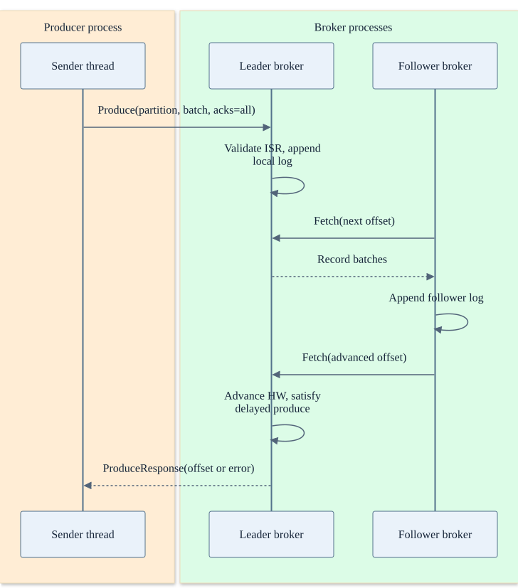

Chapter 01 · source-backed walkthrough
Kafka: processes, storage and networking
Kafka turns a producer send into an ordered replicated log append. Follow the client, broker network threads, request handlers, partition leader, followers and consumer. The controller quorum governs cluster metadata; it is separate from ordinary record replication.
01
Cluster components and ownership
Each topic is divided into partitions. Each partition has one leader and assigned replicas on brokers. Clients obtain metadata and route produce requests to the partition leader. Followers fetch from the leader and append to their own logs. Consumer groups divide partition ownership among consumer instances; consumers read data from brokers, not from the group coordinator.
KRaft controller nodes replicate metadata such as partition leadership and broker registrations. They do not replicate every application record through the controller log. The group coordinator stores group progress in __consumer_offsets. The transaction coordinator stores transaction state in __transaction_state. Their leadership is distributed across the broker cluster through internal-topic partitions.
Kafka deployment topology
A broker can host leaders, follower replicas and coordinators for different partitions. The controller role may run separately or share a process depending on deployment.

| Component | In-memory responsibility | Durable authority |
|---|---|---|
| Producer | Accumulator, batches, inflight requests, sequence bookkeeping | Broker log and producer state after append; client RAM alone is not durable. |
| Broker network + request handlers | Socket read/write, request queue, protocol handling | Partition log files and replicated coordinator state. |
| Partition leader | Ordering, ISR tracking, high watermark | Replicated log under the configured failure assumptions. |
| KRaft controller | Metadata decisions and leader changes | Replicated metadata quorum log. |
| Consumer | Fetched position, records returned to application | Group committed offset or engine-specific checkpoint, depending on the consumer. |
02
Produce request: threads, queues and replies
KafkaProducer serializes and accumulates records into partition batches. The Sender thread drains ready batches and groups Produce requests by destination broker. A send future completes when its response or terminal error is handled; calling send is not a durability acknowledgement.
The broker accepts connections and network processors decode requests into a request channel. Request handlers dispatch through KafkaApis. ReplicaManager validates required acknowledgements, appends through the leader Partition, and completes immediately or registers delayed produce work. Network processors write the eventual response. Disk appends usually enter the OS page cache; acks=all is not a promise to fsync every replica for every record.
Successful produce with replication
Followers pull. Their subsequent fetch offsets let the leader observe replication progress. This diagram models a successful acks=all path, omitting protocol retries.

Inside the broker process
Network I/O and append processing are decoupled. A waiting all-ack request need not block a handler thread for the whole replication delay.

03
Offsets and visibility are different frontiers
The log end offset (LEO) is the next append position in one replica. The high watermark (HW) bounds the replicated committed prefix available to ordinary consumers. The last stable offset (LSO) also accounts for incomplete transactions and bounds read_committed reads. These are next-offset boundaries, not counts of business events.
Example: leader LEO=120 and HW=116. An open transaction starts at 110, so read_committed may be held at LSO=110 even if later records are replicated. Closing that transaction and processing its marker permits the stable frontier to advance. An unrelated long-running transaction can therefore add visibility latency to later records in that partition.
A group committed offset of 105 means resume at 105. The application may already have fetched through 115. Fetching and returning a record, processing it, making its sink effect durable, and committing group progress are four separate milestones.
| Read or acknowledgement mode | What it waits for | Tradeoff |
|---|---|---|
| acks=0 | No Produce response | Least feedback and weakest ability to know whether a write was accepted. |
| acks=1 | Leader append response | Lower replication wait; leader loss before replication can lose acknowledged data. |
| acks=all with adequate ISR | Current in-sync replication requirement and successful append checks | Stronger durability; insufficient ISR rejects writes and sacrifices write availability. |
| read_uncommitted | Committed log frontier, without transactional filtering | May expose aborted transaction data. |
| read_committed | Stable transactional frontier and abort filtering | Correct transaction visibility; open transactions can delay later records. |
04
Throughput and latency design choices
Batching amortizes protocol headers, system calls and compression setup. Increasing batch size or linger can increase bytes per request and compression efficiency, while adding low-load latency. Partitioning distributes leaders and consumers, but raises metadata, buffer, file and coordination overhead. A hot key remains serial within its partition.
Fetch minimum bytes / wait time trade response frequency for aggregation. Compression spends CPU to save network and storage. Inflight requests hide round-trip delay but consume memory and require careful retry ordering. Persistent connections and sequential log I/O reduce repeated setup costs. A bounded producer buffer eventually blocks or fails sends if brokers cannot drain it.
For replication factor r and ingress B bytes/s, a first-order cross-broker replication estimate is (r-1)*B bytes/s before compression, protocol overhead and placement effects. This is a sizing model, not a measured capacity claim. Always check broker network, disk flush pressure, request queue time and p99 latency together.
Inside the implementation
These excerpts come directly from the code paths used above. Expand a component to move from the system view into its implementation.
kafka-socket SocketServer.scala:74
Acceptor / processor threads and request channels separate network I/O from request handling.
Kafka/core/src/main/scala/kafka/network/SocketServer.scala · d2da6a18f839
73 */
74 class SocketServer(
75 val config: KafkaConfig,
76 val metrics: Metrics,
77 val time: Time,
78 val credentialProvider: CredentialProvider,
79 val apiVersionManager: ApiVersionManager,
80 val socketFactory: ServerSocketFactory = ServerSocketFactory.INSTANCE,
81 val connectionDisconnectListeners: Seq[ConnectionDisconnectListener] = Seq.empty
82 ) extends Logging with BrokerReconfigurable {
83 // Changing the package or class name may cause incompatibility with existing code and metrics configuration
84 private val metricsPackage = "kafka.network"
85 private val metricsClassName = "SocketServer"
86 private val metricsGroup = new KafkaMetricsGroup(metricsPackage, metricsClassName)
87 kafka-api KafkaApis.scala:400
Broker protocol dispatch and per-partition validation.
Kafka/core/src/main/scala/kafka/server/KafkaApis.scala · d2da6a18f839
399 */
400 def handleProduceRequest(request: Request, requestLocal: RequestLocal): Unit = {
401 val produceRequest = request.body(classOf[ProduceRequest])
402
403 if (RequestUtils.hasTransactionalRecords(produceRequest)) {
404 val isAuthorizedTransactional = produceRequest.transactionalId != null &&
405 authHelper.authorize(request.context, WRITE, TRANSACTIONAL_ID, produceRequest.transactionalId)
406 if (!isAuthorizedTransactional) {
407 requestHelper.sendErrorResponseMaybeThrottle(request, Errors.TRANSACTIONAL_ID_AUTHORIZATION_FAILED.exception)
408 return
409 }
410 }
411
412 val unauthorizedTopicResponses = mutable.Map[TopicIdPartition, PartitionResponse]()
413 val nonExistingTopicResponses = mutable.Map[TopicIdPartition, PartitionResponse]()kafka-controller QuorumController.java:176
Metadata controller event loop and quorum-backed metadata changes.
Kafka/metadata/src/main/java/org/apache/kafka/controller/QuorumController.java · d2da6a18f839
175 */
176 public final class QuorumController implements Controller {
177 /**
178 * The default maximum records that the controller will write in a single batch.
179 */
180 private static final int DEFAULT_MAX_RECORDS_PER_BATCH = 10000;
181
182 /**
183 * The maximum records any user-initiated operation is allowed to generate.
184 *
185 * For now, this is set to the maximum records in a single batch.
186 */
187 static final int MAX_RECORDS_PER_USER_OP = DEFAULT_MAX_RECORDS_PER_BATCH;
188
189 /**kafka-txn-state TransactionStateManager.scala:70
Transaction coordinator state is persisted in Kafka.
Kafka/core/src/main/scala/kafka/coordinator/transaction/TransactionStateManager.scala · d2da6a18f839
69 */
70 class TransactionStateManager(brokerId: Int,
71 scheduler: Scheduler,
72 replicaManager: ReplicaManager,
73 metadataCache: MetadataCache,
74 config: TransactionConfig,
75 time: Time,
76 metrics: Metrics) extends Logging {
77
78 this.logIdent = "[Transaction State Manager " + brokerId + "]: "
79
80 private type SendTxnMarkersCallback = (Int, TransactionResult, TransactionMetadata, TxnTransitMetadata) => Unit
81
82 /** shutting down flag */
83 private val shuttingDown = new AtomicBoolean(false)kafka-sender Sender.java:888
ProduceRequest construction by broker destination.
Kafka/clients/src/main/java/org/apache/kafka/clients/producer/internals/Sender.java · d2da6a18f839
887 */
888 private void sendProduceRequests(Map<Integer, List<ProducerBatch>> collated, long now) {
889 for (Map.Entry<Integer, List<ProducerBatch>> entry : collated.entrySet())
890 sendProduceRequest(now, entry.getKey(), acks, requestTimeoutMs, entry.getValue());
891 }
892
893 /**
894 * Create a produce request from the given record batches
895 */
896 private void sendProduceRequest(long now, int destination, short acks, int timeout, List<ProducerBatch> batches) {
897 if (batches.isEmpty())
898 return;
899
900 final Map<TopicPartition, ProducerBatch> recordsByPartition = new HashMap<>(batches.size());
901 Map<String, Uuid> topicIds = topicIdsForBatches(batches);kafka-replicas ReplicaManager.scala:638
Append to leader logs and arrange delayed acknowledgements.
Kafka/core/src/main/scala/kafka/server/ReplicaManager.scala · d2da6a18f839
637 */
638 def appendRecords(timeout: Long,
639 requiredAcks: Short,
640 internalTopicsAllowed: Boolean,
641 origin: AppendOrigin,
642 entriesPerPartition: Map[TopicIdPartition, MemoryRecords],
643 responseCallback: util.Map[TopicIdPartition, PartitionResponse] => Unit,
644 recordValidationStatsCallback: Map[TopicIdPartition, RecordValidationStats] => Unit = _ => (),
645 requestLocal: RequestLocal = RequestLocal.noCaching,
646 verificationGuards: Map[TopicPartition, VerificationGuard] = Map.empty,
647 transactionVersion: Short = TransactionVersion.TV_UNKNOWN): Unit = {
648 if (!isValidRequiredAcks(requiredAcks)) {
649 sendInvalidRequiredAcksResponse(entriesPerPartition, responseCallback)
650 return
651 }kafka-partition Partition.scala:1219
Minimum ISR is checked for acks=-1 before append.
Kafka/core/src/main/scala/kafka/cluster/Partition.scala · d2da6a18f839
1218
1219 def appendRecordsToLeader(
1220 records: MemoryRecords,
1221 origin: AppendOrigin,
1222 requiredAcks: Int,
1223 requestLocal: RequestLocal,
1224 verificationGuard: VerificationGuard = VerificationGuard.SENTINEL,
1225 transactionVersion: Short = TransactionVersion.TV_UNKNOWN
1226 ): LogAppendInfo = {
1227 val (info, leaderHWIncremented) = inReadLock(leaderIsrUpdateLock, () => {
1228 leaderLogIfLocal match {
1229 case Some(leaderLog) =>
1230 val minIsr = effectiveMinIsr(leaderLog)
1231 val inSyncSize = partitionState.isr.size
1232 Test source inspected or located, not executed: PartitionTest.scala
kafka-hw Partition.scala:947
High watermark and replica conditions determine successful all-ack completion.
Kafka/core/src/main/scala/kafka/cluster/Partition.scala · d2da6a18f839
946 */
947 def checkEnoughReplicasReachOffset(requiredOffset: Long): (Boolean, Errors) = {
948 leaderLogIfLocal match {
949 case Some(leaderLog) =>
950 // keep the current immutable replica list reference
951 val curMaximalIsr = partitionState.maximalIsr
952
953 if (isTraceEnabled) {
954 def logEndOffsetString: ((Int, Long)) => String = {
955 case (brokerId, logEndOffset) => s"broker $brokerId: $logEndOffset"
956 }
957
958 val curInSyncReplicaObjects = (curMaximalIsr.asScala.map(_.toInt) - localBrokerId).flatMap(getReplica)
959 val replicaInfo = curInSyncReplicaObjects.map(replica => (replica.brokerId, replica.stateSnapshot.logEndOffset))
960 val localLogInfo = (localBrokerId, localLogOrException.logEndOffset)kafka-txn TransactionCoordinator.scala:516
Transaction decision and marker dispatch.
Kafka/core/src/main/scala/kafka/coordinator/transaction/TransactionCoordinator.scala · d2da6a18f839
515
516 def handleEndTransaction(transactionalId: String,
517 producerId: Long,
518 producerEpoch: Short,
519 txnMarkerResult: TransactionResult,
520 clientTransactionVersion: TransactionVersion,
521 responseCallback: EndTxnCallback,
522 requestLocal: RequestLocal = RequestLocal.noCaching): Unit = {
523 endTransaction(transactionalId,
524 producerId,
525 producerEpoch,
526 txnMarkerResult,
527 isFromClient = true,
528 clientTransactionVersion,
529 responseCallback,kafka-producer KafkaProducer.java:1126
Serialization, partition selection and accumulation before the Sender network thread.
Kafka/clients/src/main/java/org/apache/kafka/clients/producer/KafkaProducer.java · d2da6a18f839
1125 */
1126 private Future<RecordMetadata> doSend(ProducerRecord<K, V> record, Callback callback) {
1127 // Append callback takes care of the following:
1128 // - call interceptors and user callback on completion
1129 // - remember partition that is calculated in RecordAccumulator.append
1130 AppendCallbacks appendCallbacks = new AppendCallbacks(callback, this.interceptors, record);
1131
1132 try {
1133 throwIfProducerClosed();
1134 throwIfInPreparedState();
1135
1136 // first make sure the metadata for the topic is available
1137 long nowMs = time.milliseconds();
1138 ClusterAndWaitTime clusterAndWaitTime;
1139 try {